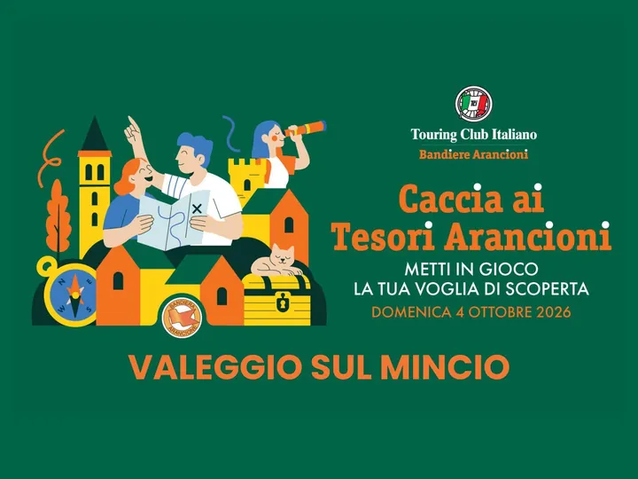

dom 4 ott
Caccia ai tesori Arancioni di Valeggio s/M
Hai mai vissuto un’avventura tra storia, enigmi e meraviglie italiane? Domenica 4 ottobre partecipa alla Caccia ai Tesori Arancioni a Valeggio sul Mincio , uno dei borghi certificati con la Bandiera Arancione del Touring Club Italiano.
 Indicazioni
Indicazioni
- Costi e prenotazioni
- Costo non indicato · Prenotazione non indicata
- Programma
- Programma da verificare. Apri la fonte ufficiale per orari e possibili aggiornamenti.
- In caso di maltempo
- Nessuna indicazione specifica pubblicata.
- Note
- Acquisito automaticamente dalla fonte.
L’EVENTO
Descrizione completa
Hai mai vissuto un’avventura tra storia, enigmi e meraviglie italiane? Domenica 4 ottobre partecipa alla Caccia ai Tesori Arancioni a Valeggio sul Mincio , uno dei borghi certificati con la Bandiera Arancione del Touring Club Italiano.
Un’esperienza pensata per tutte le età , da vivere con chi si vuole: in famiglia, con un gruppo di amici o in autonomia.
La caccia si svolge in contemporanea in oltre 100 borghi italiani, ognuno con la propria storia, la propria identità e la bellezza che lo rende unico.
Cultura, gioco e scoperta: tre elementi che si intrecciano per regalare una giornata memorabile a chi ama esplorare, osservare, lasciarsi sorprendere.
La caccia avrà una durata di circa due ore, da completare nell'arco temporale dalle 10.00 alle 14.00.
Iscrizioni a partire dal 1° Settembre sul sito del Touring Club Italiano!
Testimonia la tua giornata di caccia alle bellezze dei nostri borghi condividendo la tua esperienza e le tue foto sui social taggando @bandiere.arancioni e @touringclub e usando gli hashtag ufficiali : #tesoriarancioni #touringclubitaliano #bandierearancioni
L'evento è gratuito e aperto a tutti, con prenotazione obbligatoria.
IL PROGRAMMA
Programma e orari
Appuntamenti raccolti dalle fonti elencate. Dove manca un orario, non è ancora disponibile in questa scheda.
Programma pubblicato
- 2026-10-04 — 2026-10-04 · 10:00:00
INFORMAZIONI UTILI
Prima di partire
- Controllare la fonte prima di partire.
ORGANIZZAZIONE